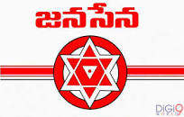
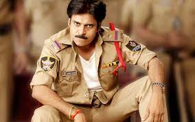
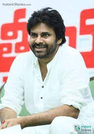
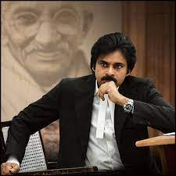
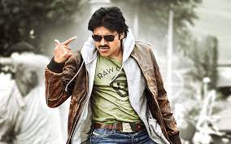
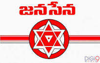
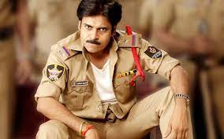
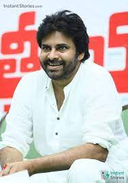
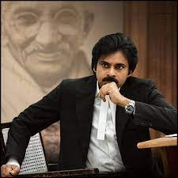
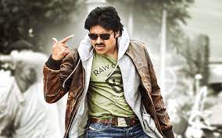

Pawan Kalyan is an Indian actor, filmmaker, and politician. His films are predominantly in Telugu cinema.The founder of Janasena Party,Jana Sena or Jana Sena Party (JSP) (People's Army Party)[4] is an Indian Regional political party based in Andhra Pradesh and Telangana, India. It was founded by Tollywood actor and politician Pawan Kalyan on 14 March 2014. Jana Sena means "People's Army" in Telugu. The motto of the party is "fight for the rights of each and every common person".
Pk Fan page
Actor
pkfans@gmail.com
- 1000MFollowers
- 322Following
- 200,543Attraction
 








